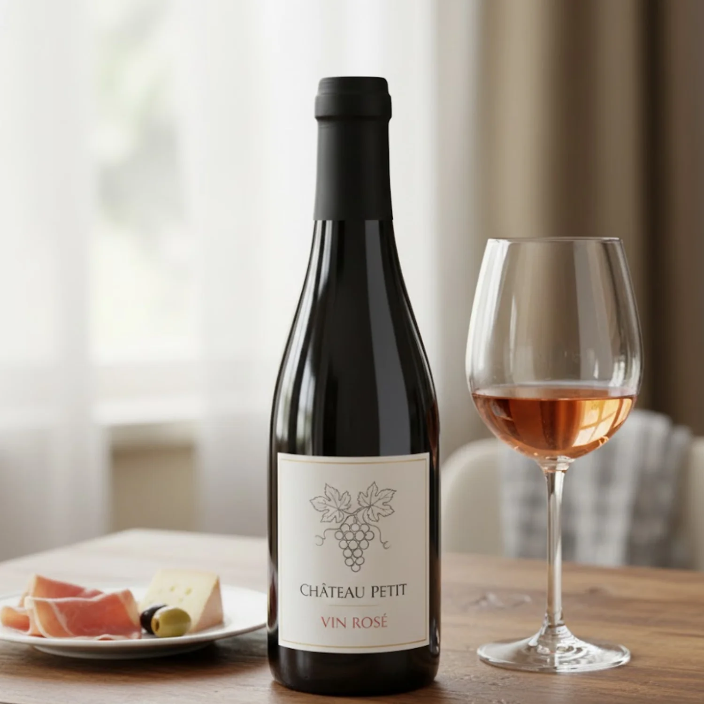
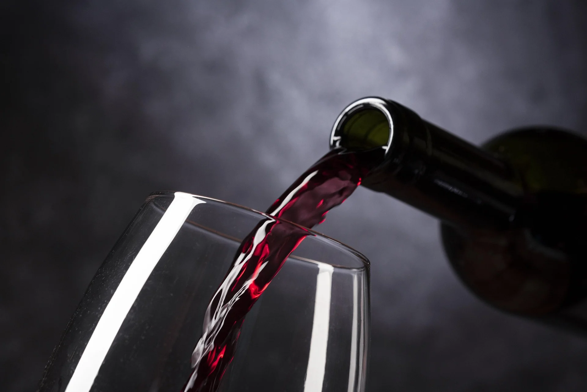
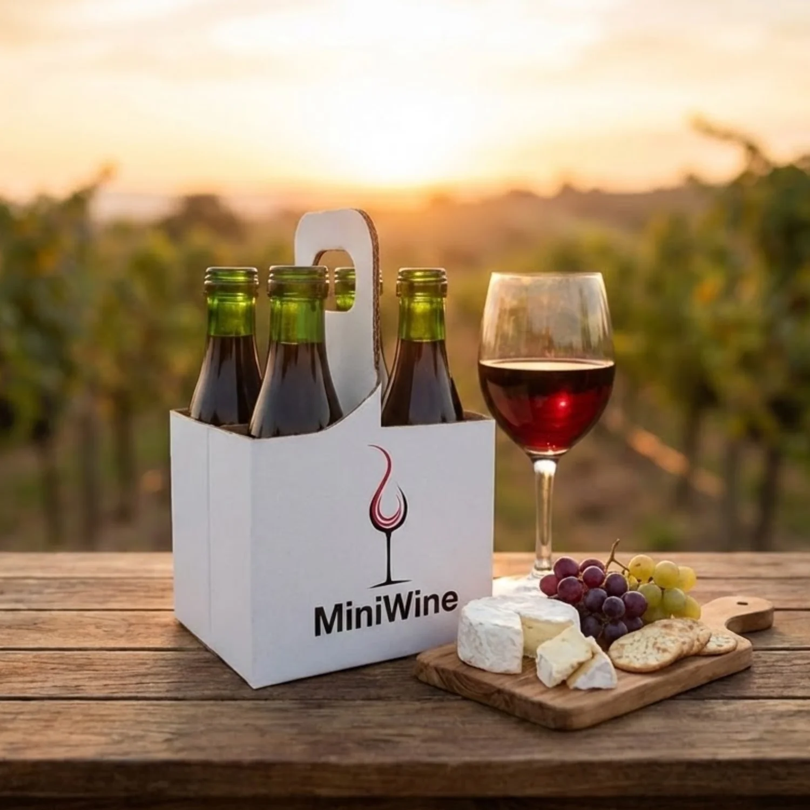

Individual
Cada botella individual de Mini Wine...


Vinos cordobeses en pequeño formato. Grandes historias en cada copa.
En Mini Wine seleccionamos vinos cordobeses...

Cada botella individual de Mini Wine...

Una curaduría de vinos cordobeses...
Cada botella individual de Mini Wine representa la identidad de una bodega cordobesa. Son vinos seleccionados uno por uno, en 187 ml, para que puedas probar, elegir y encontrar tus favoritos sin necesidad de abrir una botella entera. Varietales clásicos, expresiones artesanales y blends únicos, todos con su propio carácter y la dedicación de cada productor local.
Una curaduría de vinos cordobeses en formato degustación, ideales para regalar, explorar nuevos varietales o disfrutar momentos especiales. Disponible en pack de 4 unidades para una experiencia completa y en pack de 2 unidades, perfecto para una degustación rápida. Una selección pensada para sorprender.
Delivery gratis en los siguientes barrios:
En otras zonas...
Entrega gratis retirando...
Llevamos tus vinos a nuevos clientes...
Quiero sumar mi bodegaLlevamos tus vinos a nuevos clientes sin que te preocupes por la logística. Expandí tu mercado hoy mismo. Unite a nuestra selección exclusiva de etiquetas. Buscamos bodegas con historia y calidad para ofrecer a nuestra comunidad.
Quiero sumar mi bodega